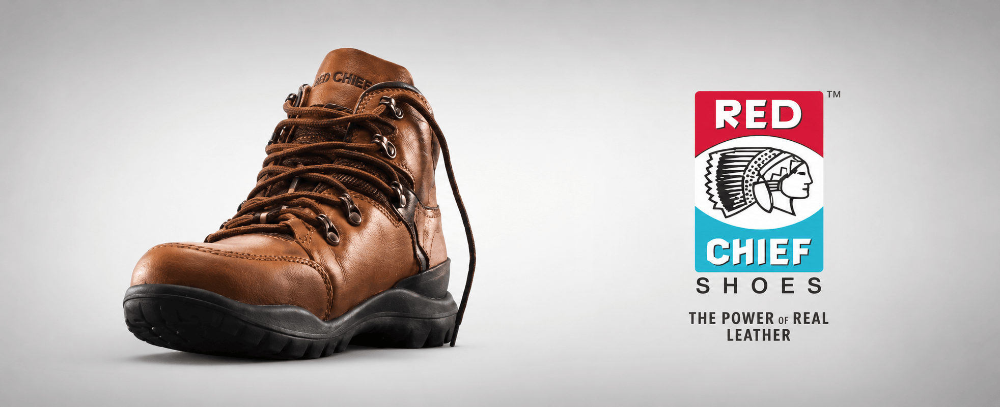
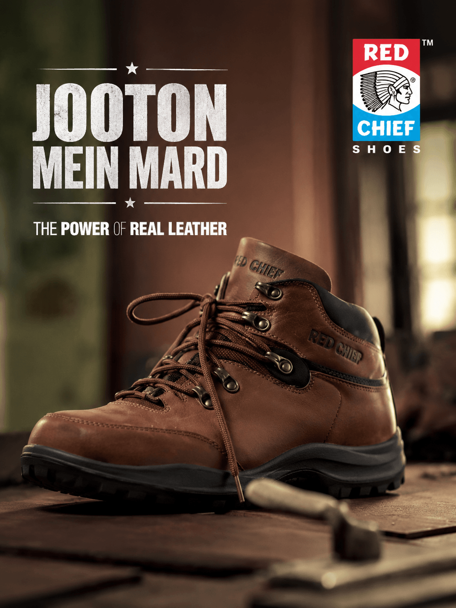
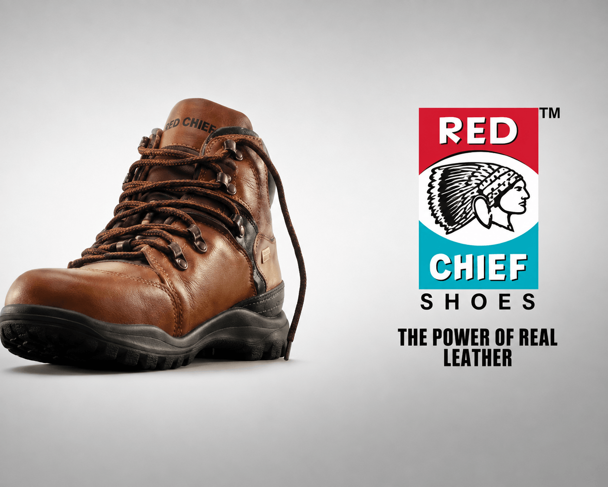

Durability and real leather need to feel tangible on screen, not remain abstract quality claims.
← Back to workBuilt with leather.
Red Chief Shoes · Brand Film
Built with leather.
Defined by character.

Project overview
A material advantage.
Turned into attitude.
Red Chief’s strongest truth is physical: genuine leather footwear made to deliver durability, comfort and presence.
The “Mard” film turns that product strength into a bold personality—making way for a man whose confidence feels as robust as the shoes he wears.
- Campaign
- Mard
- Product
- Leather Footwear
- Promise
- Strength + Durability
- Format
- Brand Video
The hero film
Make way
for the Mard.
A rugged product story where movement, terrain and presence turn real leather into a visible expression of strength.
The challenge
Show toughness.
Keep the product premium.
Rugged masculinity must create dramatic recall while preserving craftsmanship, finish and footwear desirability.
The creative approach
Put strength in motion.
Let leather take the impact.
- 01
Build the persona
Create an unmistakable central character with calm physical authority.
- 02
Test the terrain
Use movement and environment to make durability visually credible.
- 03
Own the close
Resolve character and action in the Power of Real Leather promise.
The campaign world
Earth. Impact.
Real leather.
Textured environments, grounded colour and hard directional light give the film weight. Product close-ups preserve the grain, construction and powerful boot silhouette.


The film grammar
Rugged in feeling.
Precise in execution.
Performance
Controlled physicality establishes character without unnecessary dialogue.
Cinematography
Low angles, textured light and movement create scale and weight.
Product detail
Leather surface, sole and construction receive strong visual emphasis.
Sound and edit
Impact-led pacing supports the campaign’s physical, masculine energy.
The outcome
A footwear film.
With the weight of a brand stance.
A bold campaign video that unites material quality, rugged product performance and the Red Chief personality under one established promise.
Material proof
Leather and construction become visible sources of strength.
Distinct persona
The “Mard” character gives the product a recognisable attitude.
Brand consistency
Every frame reinforces the Power of Real Leather platform.
Real leather underfoot.Real character out front.
Have a product truth with power?